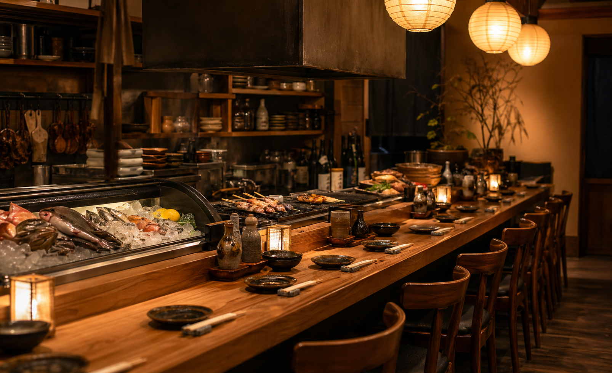

戻り鰹の藁焼き
表面だけを香ばしく炙り、塩と柑橘で。最初の一杯に。
¥1,380

Charcoal Tapas & Sake
渋谷の裏路地に灯る、炭火小皿と日本酒の酒場。焼きたての串、旬魚のカルパッチョ、熱々の土鍋、香りのよい一杯を、肩ひじ張らずに楽しめます。
一皿ずつ頼んで、少しずつ分け合う。今夜の気分で組み立てる酒場です。
強火で香ばしく焼く串と魚介。炭の香りが立つ瞬間をカウンター越しに楽しめます。
小皿は一人一品でも、二人で少しずつでも。軽い飲みからしっかり食事まで使いやすい献立です。
日本酒、ナチュール、果実サワーを料理に合わせて。スタッフが好みに合わせておすすめします。

Sake Pairing
辛口、旨口、微発泡、燗酒。銘柄名だけでなく、料理との相性で選べるようにしています。迷ったら「魚に合う軽め」「肉に合うしっかり」など、気分でお声がけください。
Party Course
前菜、藁焼き、炭火串、揚げ物、土鍋ご飯、甘味。初めての方におすすめ。
¥4,800刺身、串焼き、季節野菜、名物春巻き、締めの蕎麦。120分飲み放題付き。
¥6,300旬の入荷に合わせた小皿を少しずつ。日本酒ペアリングの追加も承ります。
¥7,700
Seat Mood
焼き場を眺めるカウンター、気軽なテーブル、暖簾で仕切る半個室。仕事帰り、デート、少人数の飲み会まで、それぞれの夜に合う席をご用意しています。
Access

Reservation
当日の空席、半個室、コース内容のご希望はお電話で承ります。金曜・土曜は混み合うため、早めのご予約がおすすめです。